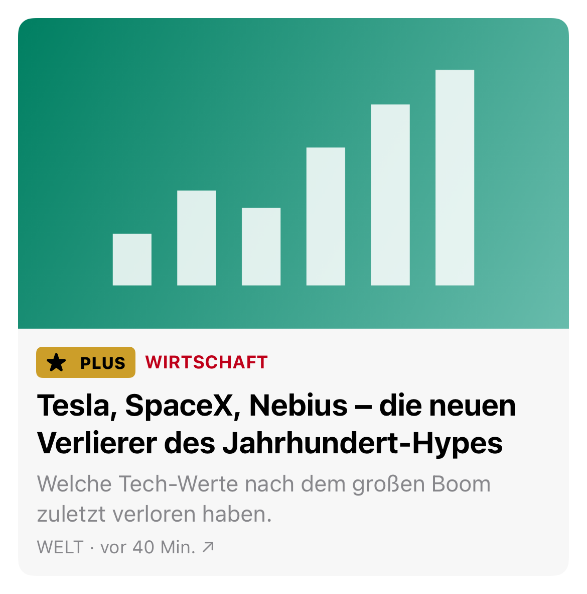
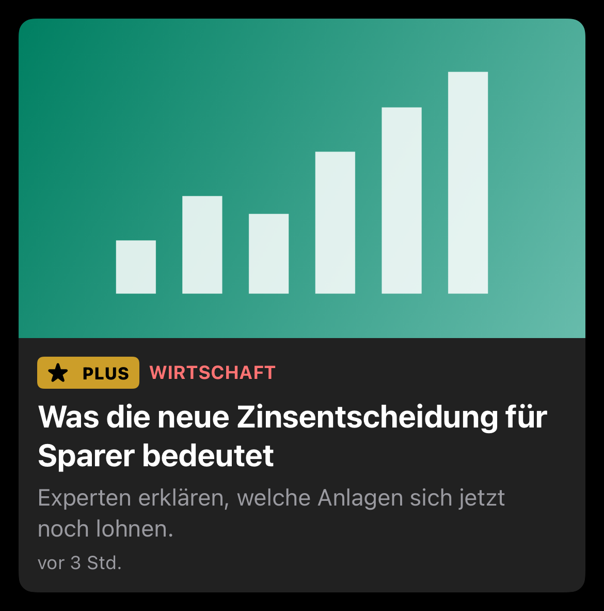

How one screenshot test works
One real test from this project, what each line does, and everything that happens between typing make ios-test and seeing pass or fail.
The test
// ComponentSnapshotTests.swift final class ComponentSnapshotTests: XCTestCase { private var feed: Feed! override func setUp() async throws { feed = try Snap.store.feed("feed_default") 1 } /// WELT-style paywalled item: the PLUS badge must survive refactors in both themes. func test_teaserCard_premium() throws { 2 assertComponent( 4 TeaserCard(teaser: try teaser("tsr-002", in: feed)) 3 ) } }
| 1 | Before each test, load the frozen fake feed from fixtures/feed/feed_default.json. |
| 2 | One test = one state of one thing. The function name also names the golden files. |
| 3 | Build the real teaser card from the app's code, with the PLUS article (tsr-002) from the fixture. |
| 4 | The helper (SnapshotSupport.swift) draws it in light and dark, and compares each picture with its golden. |
That's the whole test. No app launch, no login, no tapping: the card is created directly with the data it should show.
What happens when it runs
You run make ios-test
It boots the pinned simulator (iPhone 17, iOS 27.0) in the background if it isn't running, then runs every test in the NewsKit package. Nothing appears on screen.
Load the fixture
The fake API response is read from the JSON file. This is the part of it the test uses:
{
"type": "teaser",
"id": "tsr-002",
"kicker": "WIRTSCHAFT",
"headline": "Tesla, SpaceX, Nebius – die neuen Verlierer …",
"image": "economy.png",
"publishedAt": "2026-11-05T13:33:06Z",
"premium": true,
"source": "WELT"
}Build the real screen
TeaserCard is the same SwiftUI view the app shows in the feed. The test passes it the article directly, which is why no navigation is needed.
Freeze everything, then draw it in memory
The helper pins the clock (5 Nov 2026, 15:13), German locale, Berlin time zone, bundled images and no animations. It then renders the view into an image at a fixed width, once for light and once for dark.
Find the golden by name
The snapshot library builds the path from test class + function + variant:__Snapshots__/ComponentSnapshotTests/test_teaserCard_premium.light.png
Compare
Every pixel is compared. Differences the eye can't see (graphics noise) are allowed (perceptual precision 0.98); anything visible fails.
✓ Same: the test passes
Nothing is written. For the whole suite: "no snapshot failures".
✗ Different: the test fails
The new picture is saved in artifacts/ios/failures/. After the run, scripts/diff-report.swift turns every failure into a golden | new | difference image in artifacts/ios/diffs/index.html, plus summary.md.
The pictures involved
The goldens (approved)


test_teaserCard_premium.light.png and .dark.pngA failure (from the regression)

Why it's reliable: the data and environment never change, so the same code always draws the same pixels. A difference can only mean the code changed.